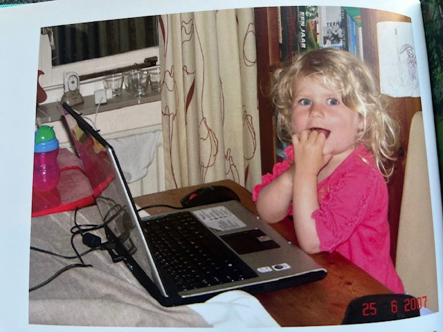
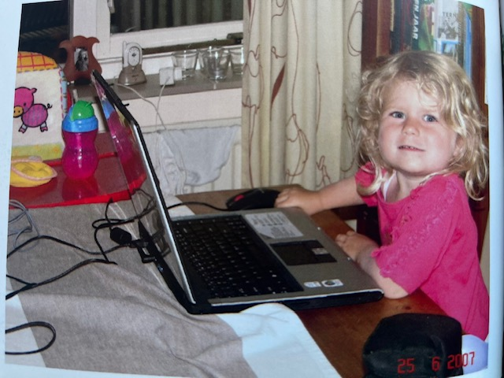

Waarom is HB0-ict iets voor mij?
Ik heb gekozen voor hbo-ict omdat ik computers
super
interessant vind.
Toen ik 10 jaar oud was had ik mezelf opgegeven voor een programmeer cursus,
alleen was er te weinig animo en ging de cursus niet door. ik ben dus altijd al bezig met technische dingen
en
vind
het dus ook interessant om daar meer over te weten. Ook ben ik erg creatief. Niet zo creatief dat ik hield
van
knutselen, maar meer van het bedenken van creatieve oplossingen.
daarom denk ik dat hbo-ict iets voor mij is,
omdat ict een combinatie is van veel techniek en creatieve oplossingen bedenken.
Wat mijn valkuil kan zijn in deze opleidng, is dat ik mijn creativiteit net niet genoeg kwijt kan.
Maar dat zien we dan weer wel:)
Waarom heb ik gekozen voor de HZ hoge school?
In eerste instantie had ik mij ingeschreven bij de Fontys in Tilburg, alleen kon ik geen
kamer
vinden. ik heb toen
besloten om naar de HZ te gaan, niet alleen omdat ik in Tilburg geen kamer kon vinden, maar ook omdat de
opleiding
HBO-ict bij de HZ een bredere opleiding is dan de ict opleiding bij Fontys. Omdat ik nog niet helemaal weet
wat
ik
precies wil in de ict heb ik dus besloten om mezelf breder te laten opleiden waardoor ik dus meer keuze heb
later. Ook heeft de HZ 3 richtingen die in mijn oren erg interessant klinken. De richtingen zijn:
- software engineer
- data scientist
- business it consultant

